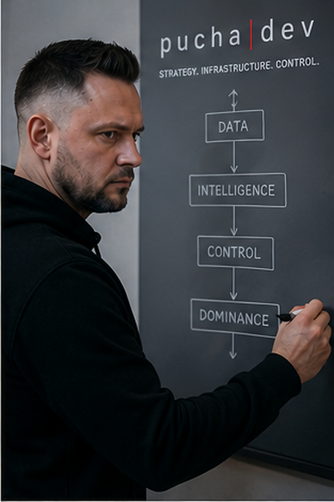

Von Daten zu
Handlungsfähigkeit.
Daten allein schaffen noch keinen Überblick. Erst wenn Informationen geprüft, in Kontext gesetzt und strukturiert ausgewertet werden, entsteht eine belastbare Grundlage für Entscheidungen.

Ein System statt einer Sammlung von Tools
Digitale Sicherheit und strategische Recherche bestehen nicht aus einem einzelnen Tool oder einem spektakulären Dashboard. Entscheidend ist die Prozesskette: Informationen erfassen, Quellen bewerten, Zusammenhänge erkennen und daraus nachvollziehbare nächste Schritte ableiten.
Relevante Daten und öffentlich zugängliche Informationen geordnet erfassen.
Quellen prüfen, Muster einordnen und Fakten von Annahmen trennen.
Risiken priorisieren, Maßnahmen dokumentieren und Prozesse kontrollierbar machen.
Im Wettbewerb um Klarheit und Reaktionsfähigkeit die bessere Entscheidungsgrundlage schaffen.
Dominance bedeutet hier keine Kontrolle über Menschen, sondern einen strategischen Vorsprung durch Übersicht, Vorbereitung und diszipliniertes Handeln.
Was das in der Praxis bedeutet
OSINT & Recherche: öffentlich verfügbare Informationen nachvollziehbar auswerten und Quellen dokumentieren.
Digitale Beweisdokumentation: Inhalte, Zeitlinien und Kontext geordnet festhalten, ohne eine gerichtliche Verwertbarkeit pauschal zu versprechen.
Cyberstalking-Prävention: digitale Angriffsflächen reduzieren, Konten absichern und einen strukturierten Umgang mit Vorfällen entwickeln.
IT- und Systemberatung: technische Zusammenhänge verständlich machen und Lösungen nach Sicherheit, Datenschutz und Wartbarkeit bewerten.
Der Grundsatz
Keine voreiligen Schlüsse. Keine künstliche Komplexität. Keine Behauptung ohne nachvollziehbare Grundlage. Gute Arbeit macht sichtbar, was bekannt ist, was noch offen ist und welche Handlung als Nächstes sinnvoll ist.
Leistungen & Kontaktpucha.dev